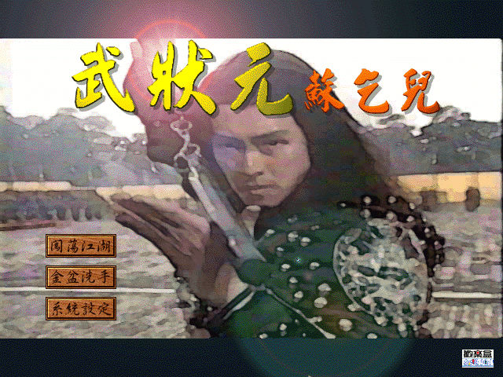
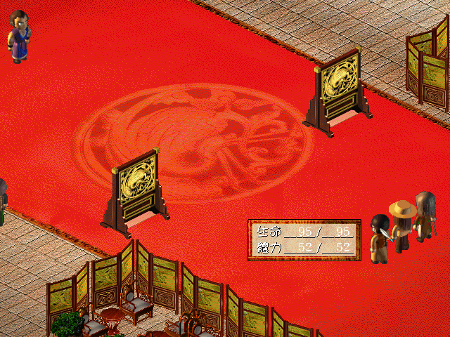

名稱：武狀元蘇乞兒 (中文版) 簡介：歡樂盒2000年出品的策略角色扮演遊戲，改編自周星馳的同名電影 [待補]。

保護：光碟，破解碼（放入光碟才有背景音樂）： Su.exe 83 C4 08 85 C0 75 04 33 C0 EB 4C -- -- -- -- -- EB -- -- -- -- -- 8A 95 78 FF FF FF 88 55 FC 8D 4D FC 51 E8 1D BE 04 00 83 F8 05 75 08 8A 85 78 FF FF FF B2 2E 90 90 90 90 -- -- -- -- -- -- -- -- -- -- -- -- -- -- -- 90 90 B0 2E 90 90 90 90 75 1A 6A 00 68 60 EB -- -- -- -- -- 74 39 8D 95 90 90 -- -- 75 15 8D 45 90 90 -- -- 3F 3A 5C 00 (共2個) -- 5C 00 -- 需拷貝光碟上所有的avi檔，以及Data和Map目錄到安裝目錄裡。